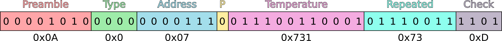
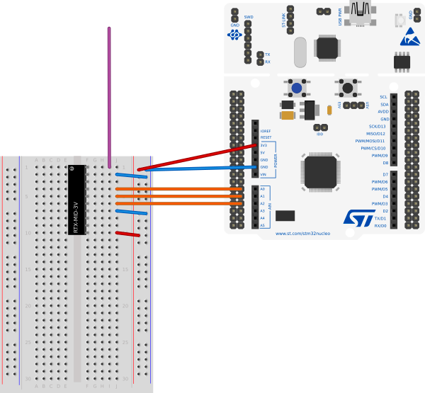

Lacrosse TX3
Lacrosse TX3 is a protocol used by some weather stations to communicate with an external temperature sensor. I started exploring this subject when my temperature sensor had passed away and I decided to build my own. Unfortunately I didn’t have an opportunity to sniff the communication between the weather station and the temperature sensor, but I was lucky because it didn’t take me long to find similar product on the Internet with the protocol explained.
I’ve found two pages that were very helpful. F6FBB Lacrosse protocol 1 describes details of Lacrosse TX3 datagrams, and F6FBB Lacrosse timings 2 gives hints on how to send them.
Protocol description
Although all information can be found on the linked sites, I decided to rewrite them here, in case my website will be the only knowledge base after World War III.
Datagram
Each datagram consists of 44 bits:
- Preamble (8 bits)
It’s always
0x0A, no matter what.- Type (4 bits)
According to the linked website, this is a type of measure. It can be
0x0for temperature or0xEfor humidity. I can’t verify humidity measurement, because my weather station is cheap, but I’m 100% sure that0x0works for temperature.- Address (7 bits)
Address of the sensor. It’s not described how weather stations should interpret this value, but I can say a few words about mine. When my weather station is firstly powered on, it waits for any transmission for about 90 seconds, and then it remembers address of every sensor (up to 4) that sent something. Depending on how many of them sent something during this time, my weather station allows me to switch between those readings. The station repeats waiting for readings every 2 or 3 minutes, but now it ignores all transmitters that weren’t learned on the beginning.
- Parity (1 bit)
Parity bit works as a typical parity bit. It should be set when number of 1’s in the temperature part is odd. Sum of 1’s from the pink and yellow part should be even.
- Temperature (12 bits)
Temperature is encoded on 12 bits as a packed BCD 3. That means every nibble (4 bits) is a part of the resulting decimal, with the last digit being a fraction. For example:
0111 0011 0001 = 0x731 7 3 . 1
According to the result, temperature is 73.1 degrees. Pretty hot, isn’t it? Thankfully not. To get the correct value, 50 must be subtracted from the read result, and that’s it - 23.1 Celsius degrees. I’m not sure about origins of this offset, but I can only suspect this is a method of transmitting negative values. Every reading below 50 will result in a negative number, thus the minimum temperature the can be transmitted is -50 degrees (result equals to 0).
- Repeated temperature (8 bits)
I don’t know why it’s there, but it should be equal to the first 8 bits of the temperature.
- Checksum (4 bits)
Checksum is calculated by summing all nibbles together and then ANDing the sum with
0x0F. In the above example it will be:0000 1010 0000 0000 1110 0111 0011 0001 0111 0011 0x0 + 0xA + 0x0 + 0x0 + 0xE + 0x7 + 0x3 + 0x1 + 0x7 + 0x3 = 0x2D 0x2D & 0x0F = 0xD = 1101
Transmission
According to the F6FBB Lacrosse timings 2, the data is sent at 433.92 MHz frequency, using OOK modulation, with bits being PWM encoded. The bit times given on that site are too precise, those Chinese weather stations aren’t that picky, so the bit times can be slightly rounded up or down.
Each transmitted bit consists of two parts: a variable-length high state and a fixed-length low state. The table below contains the actual durations.
High state |
Low state |
|
|---|---|---|
0 |
1300 us |
1000 us |
1 |
500 us |
1000 us |
Datagrams are transmitted MSB first. I also send them twice, with 500 ms interval. I’m almost certain this is totally redundant, but apparently my weather station works better when I do so.
Transmission test
I’ve built a prototype temperature transmitter on Nucleo F103RB and RTX-MID-3V 4 transceiver. Using a 32-bit microcontroller for this project looks like an overkill, but the development board is just way simpler to use than reviving my old ATmega 16 and wiring it up on a breadboard. It was also a good opportunity to test my CMSIS template 5.
That black thing on the breadboard is the transceiver. The pins, from the top to the bottom, are:
Antenna - it’s just a hanging wire, speaking professionally - monopole antenna
Ground
Not connected
Data input (connected to PA0)
TX/RX switch (connected to PA1)
Enable / Disable (connected to PA4)
Ground again
Analog output
Data output
VCC